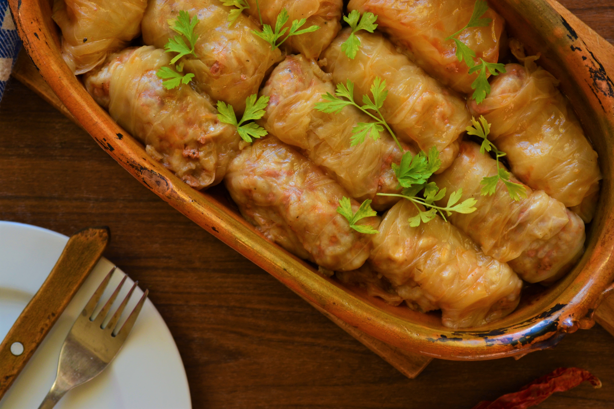

Home
Sarmale

Sarmale(Cabbage rolls) are a food made of cabbage leaves rolled around a filling of minced meat, grains such as rice, or both.
Ingredients
- Ground pork
- Onion
- Sour cabbage leaves
- Tomato Juice
- Rice
- Vegetable Oil
Preparation Method
- Soak the sour cabbage in cold water overnight or at least an hour before making these. Then take each leaf and cut the core from then cut it in half if the leaves are too big.
- Heat the oil in a skillet, add the onions and cook until softened and translucent. Add the rice and cook for another minute.
- In a large bowl, add the ground pork, salt, pepper, parsley, dill and the onion and rice mixture. Be careful with the salt, not too much is needed because the sour cabbage is already salty. Mix well using your clean hands.
- Preheat the oven to 191°C.
- Fill each leaf with about a ¼ cup of the meat mixture and roll tucking in the ends.
- Pour the tomato juice over the cabbage rolls and add additional water as needed. You want to make sure the rolls are completely covered with liquid.
- Cover the Dutch oven with a lid or aluminum foil if your pot doesn't have a lid and transfer it to the oven. Bake for 2 hours, then remove the lid or foil and cook for another 1 to 1.5 hours.
- Serve with sour cream.